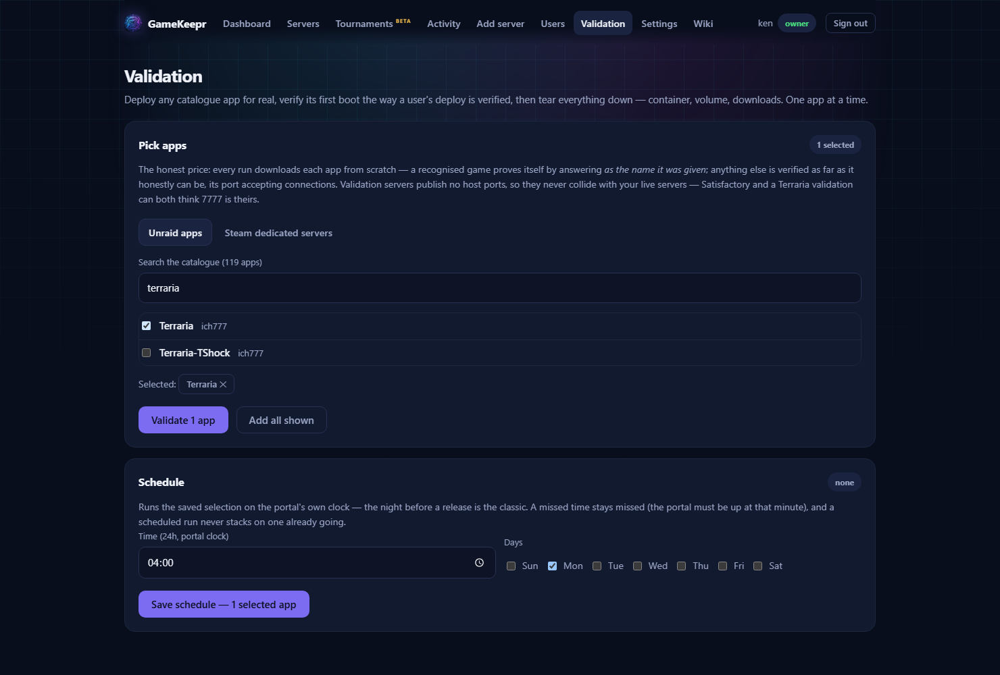

Installing game servers

Add server offers two routes. They differ in who you are trusting.
Unraid apps
Every game-server template in Community Applications, trusted publishers first. Publishers on the portal's trusted list (TRUSTED_PUBLISHERS in .env; ich777, binhex, linuxserver and friends by default) deploy without ceremony. Everyone else wears a community publisher badge and deploys only past an explicit warning you acknowledge — you are trusting that image's author with the server's data and your network, and the portal says so instead of deciding for you. Before anything is created, GameKeepr reviews the template and shows its findings: who published it, whether the image is what it claims, which paths it mounts. The hard refusals hold for every publisher, listed or not: privileged mode, host devices, and mounts outside the server's own directory are refused outright — no game server needs root on the host.
Steam
Any dedicated server Steam carries (~580 at the last count, recognised games sorted first), as a container GameKeepr composes itself on Valve's official steamcmd image. Here you trust exactly two parties — Valve's image and Steam's own depots — and the one thing in between is a start script GameKeepr writes, which lands in the server's own files where you can read it. (Windows-only servers add a third party: ich777's WineHQ base image, see below — the deploy form always names the image it will use.)
- The start command comes from Steam's own app info and is shown for you to confirm. When Steam lists no Linux command, GameKeepr's registry fills in the known start script for games it recognises (7 Days to Die, Project Zomboid) — and for everything else the field may simply stay empty: the server then finds its own conventional start script (
startserver.shand friends) on first boot, refusing loudly instead of guessing when none exists. When a server misbehaves, the game's wiki usually documents the right headless command — edit it in the form or later in the Files tab. - SteamCMD downloads the server on first start and re-checks on every start, which is also how it updates.
- Windows-only servers run through Wine. Plenty of games (Enshrouded, Sons of the Forest) publish no Linux build at all. For those, GameKeepr composes the container on ich777's WineHQ base image instead — the same author whose per-game Wine containers are the Unraid community's standard — downloads the Windows files, and starts the
.exeunder Wine on a virtual display. The deploy says so and asks you to acknowledge: it works well for many servers, but it is not native — expect a bit more RAM, and the odd game needs Wine settings of its own. An app with neither a Linux nor a Windows build is refused with the reason. The catalogue tells you all of this on the row, before you click anything: every shipped server carries its OS from Steam's own app info (283 of the 579 are Windows-only), as a Windows-only · Wine or no server build badge. The deploy still inspects the app live — the badge informs, the inspection decides. - Whether an app allows anonymous downloads is judged up front, from Valve's own dedicated-servers list: a known "no" warns you to set a Steam account before the first start fails on it, and an app the list does not know says honestly that the first start will tell. A wrong value in the list never blocks you — acknowledge and try.
- Anything not in the list: paste its app id or store/SteamDB URL in the search box.
What both routes share
- Joining, asked up front: for recognised games the form opens with the join settings — password, world, server name, and for games that have one the admin password (operators-only afterwards; it never appears on the Joining card). Everything can still be changed later on the Settings tab, and the server's overview shows a Joining card with the address, port and password for everyone who may see it.
- Values checked before anything exists: each join setting is held to the game's own rules in the form — a four-character Valheim password is refused right there (the game would refuse to boot on it, minutes later and much more quietly), and deploying without a password proceeds only after you acknowledge that anyone who finds the address can join.
- Ports: GameKeepr's game registry knows what each recognised game needs and fills in anything the template or your list forgot — a Project Zomboid with only one of its two UDP ports looks healthy and is unjoinable, which is exactly the failure this prevents. The deploy log says what was added.
- Network: every deployed server joins GameKeepr's own Docker network, so the portal can reach it by name for player counts.
- Forwards: with a router connected (see Networking and ports), the deploy opens the game's ports on it automatically and says so in the deploy log. Administrative ports (RCON, web consoles) are never opened automatically.
- Registration: the new server appears in the portal immediately, with player queries, mods, backups and typed settings wherever the registry recognises the game.
- Verification: created is not the same claim as works, so the deploy screen follows the first boot until the game itself answers — and, where the game reports a name, answers as the name you configured, which proves the settings landed. First boots get first-boot patience: past the game's normal startup budget the portal keeps waiting as long as the download demonstrably progresses, up to an hour. The ending is one of three honest words: verified, unconfirmed (running, but full proof never came — the note says why and what to check), or failed (the container died; read its Logs tab). A failed first boot keeps the server and its download by default; cleaning up is one deliberate click, never automatic. The outcome also lands in the activity feed and on Discord.
Validation runs (owner)

The Validation page lets the owner prove that what the portal offers still turns into working servers from nothing, on this very machine. Pick targets from both deploy paths — Unraid catalogue apps and Steam dedicated servers, through the same searches as the Add server tab — and each is deployed for real under a validation name, held to the same first-boot verification bar as any deploy, and then torn down completely — container, volume, downloads. Strictly one app at a time, so a run never competes with itself for disk, bandwidth or ports. A game the registry recognises proves itself by answering as the name it was given; any other app is verified as far as it honestly can be — its port accepting connections — and the outcome note says which bar was used.
The outcomes extend the verification's three with two honest extras: template refused (the app fails the same review a user's deploy would hit — an untrusted publisher, a refused template, or on the Steam path a missing Linux build) and skipped (this attempt could not run right now — a leftover container wearing the validation name, or a Steam app that refuses anonymous downloads, which a validation run without an account cannot prove anything about).
Validation servers publish no host ports: nobody joins them, the verification talks over the internal Docker network, and a run therefore never collides with a live server of the same game — validating Terraria while Satisfactory holds port 7777 is a non-event. It also means a throwaway server never stands open on your LAN.
The deliberate price: every run downloads each game from scratch, because a warm cache would skip exactly the first-install experience being tested — hundreds of gigabytes for a full sweep. Run the full set once, then validate subsets. The result lands in a run history on the page and as one Discord summary (enable A validation run finished under Notifications). Validation servers never appear on the Servers page and never ping anyone mid-run.
A schedule makes it a standing instruction: save the current selection with a time and days (the night before a release is the classic), and the run fires on the portal's own clock. The same three rules as every schedule here: portal time, a missed minute stays missed, and a scheduled run never stacks on one already going.
Renaming and removing
Operators can rename a server from its card (the pencil, dimmed until hovered): only the display name changes — the container, the URLs and the artwork stay put. Servers listed by hand in config/servers.json are renamed in that file.
Two ways out, with very different weight:
- Remove from the portal (operators): takes the server off the list, with its schedules and access exceptions; the container itself is left running, so nothing is destroyed by an accidental click.
- Delete (the owner only, the bin on the card): stops and removes the container and forgets the server. The game's data directory and its backups deliberately stay on disk — worlds do not die by button. Clean the disk by hand when you are sure.
A server listed by hand in config/servers.json deletes too, with one honest difference: the file is mounted read-only, so the portal records the entry as removed and stops listing it — schedules, access exceptions and caches go the same way — but the container (which the portal did not deploy) is left untouched. Delete the line from the file at your leisure; re-adding it later brings the server back.